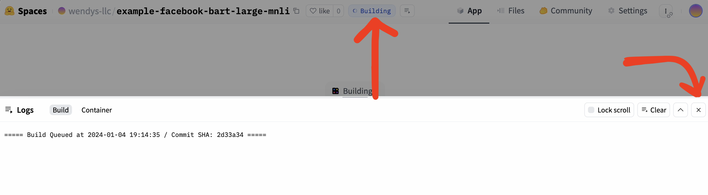

How to create a demo page for an AI model
While the AI world can sometimes be super technical, we don’t need to know anything about anything to try out most models! With a link to their Hugging Face page and a few mouse clicks, the most advanced tools in the industry can be at your service.
The end result isn’t very customized, but sometimes that’s okay! If we’re looking for a more polished experienced, the next chapter might be a better fit.
The goal
In this example we’re going to make an automatic text categorizer with just a few clicks. We might use something based on this tool to filter documents, sort emails or review legislation before they are read by an actual journalist.
The end result will look like this:
Give it a try! My suggestion is:
- Input: mr sparkles
- Possible categories: clown, pet, senator
Note that if we were going to use this tool for research in our newsroom, this interface wouldn’t be the final product. It’s just a simple, accessible demo to help with experimentation and early-stage feedback.
Building a AI demo page
Let’s say we hear about a model released by Facebook that can categorize text for us. We’re doing a project where we need to categorize a few thousand documents, so it sounds like it might be useful! But before we get too deep in development, it might be nice to test drive it a little bit.
We’ll start off at the model’s Hugging Face page at https://huggingface.co/facebook/bart-large-mnli.
Did we get it sent to us? Did we do some searching? We’ll talk about how to find models later! For now all that matters is that we’re on the page.
Model pages often open in a technical, intimidating manner, and this page is no exception:
bart-large-mnli
This is the checkpoint for bart-large after being trained on the MultiNLI (MNLI) dataset.
Additional information about this model:
- The bart-large model page
- BART: Denoising Sequence-to-Sequence Pre-training for Natural Language Generation, Translation, and Comprehension
- BART fairseq implementation
We don’t know what any of that means! But scrolling through the page we see the phrase “zero-shot classification” – someone told us that means “putting things in categories,” so we’re confident we’re in the right place.
Using examples on the page
There’s usually a tiny playground on the right-hand side of the page with a couple examples. Sometimes you can also type in your own examples to have the model work on.
If you’re looking for a quick test, sometimes that playground is enough to get across how the model works and experiment with limitations.
…but not for us!
Creating your own
Those examples are fine, but they aren’t enough! We want to share a demo with a colleague, and we don’t want to force them to dig through that long, cluttered page. We want something nice and clean!
There are a few ways to tackle this – in this walkthrough we’re doing the easiest (but most simplistic!).
This process works for almost every Hugging Face model page, not just the one we’re using for our demo! For example, instead of putting text into categories you could be transcribing audio.
Scroll to the top of the model page and find the Deploy button on the right. Click it and you’ll see a dropdown appear: select Spaces. Spaces is Hugging Face’s application hosting platform, and they’ll let you use it for free!
They display some code, but we don’t care about it. Just click Create new Space.
Now Hugging Face will ask you for some details about your new demo page. You can change the Space name if you’d like, but keep everything else the same.
Scroll to the bottom and click Create Space.
Now Hugging Face will start to put your Space together. Note the Building up at the top - when it turns to Running, feel free to click the X to close the “Logs” window. It might take a few minutes, so feel free to go get a coffee!

Once your demo is running, you’re ready to go!
Reflection
In this tutorial we learned to create a live demo for an AI model using Hugging Face Spaces. The end result isn’t customized at all, but it’s enough to play around with or share with members of our team.
It’s easy to hear about “a magic robot to automatically categorize documents” and have an immediate emotional reaction – whether that’s dismissing it out of hand or throwing confetti into the air is up to you. Being able to experiment allows you set those feelings aside and see whether the tool is actually going to be useful.
Simple, shareable demos are also a great way to get practical, nuanced feedback from non-technical team members who might be otherwise left out of the conversation. Even programmers get tired of running code from time to time!
Next steps
If we’re looking for a other models to play around with we can browse all of the models, but I’ve also hand-picked a few that might be interesting:
- bert-base-NER for named entity recognition (finding people, places and things in text)
- bart-large-cnn for summarization (…it won’t beat ChatGPT, though!)
- blip-image-captioning-large for automated image captioning
Let’s be honest, though: these demos aren’t very friendly! Our coworkers would really love some instructions and an example or two, wouldn’t they?
If we want more control over the experience, the next section will walk us through how Gradio – the technology that powers our tool – can be used to build a more customized demo.